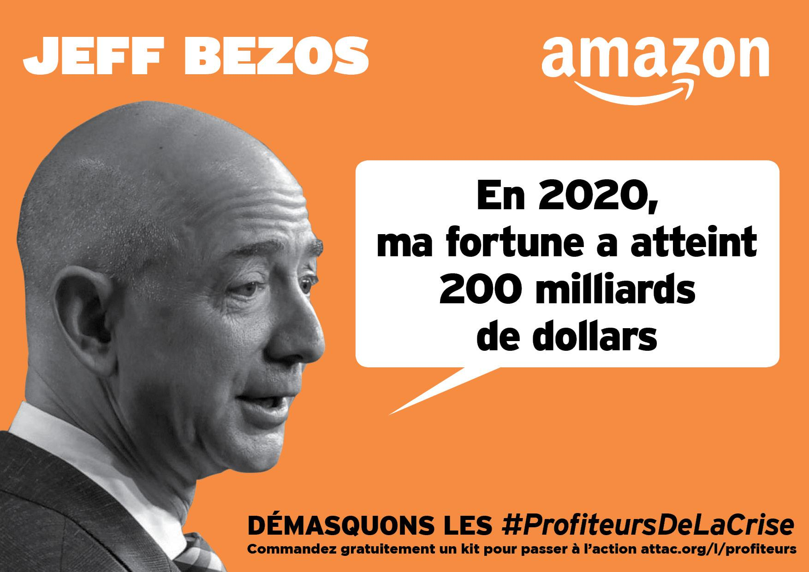

Amazon détruit les commerces
(Retrouvez les 30 bonnes raisons de stopper Amazon)
Amazon : Une stratégie de vente à perte et de monopole propulsée par les marchés financiers
Amazon écrase la concurrence
Amazon est le plus grand marchand en ligne du monde. C’est la première capitalisation boursière mondiale : 2000 milliards de $. Jeff Bezos est l’un des hommes les plus riches du monde. Sa fortune personnelle est estimée à plus de 200 milliards de $ en 2020. Lors du Black Friday de 2017, JB a gagné plus de 2 milliards de $ en une seule journée.
Amazon a bien profité de la crise de la Covid-19 : son bénéfice net a doublé au dernier semestre 2020, pour s’établir à 7,2 milliards de $ (voir ici). Vous croyez que JB est le copain des petits commerçants ?
- Amazon, c’est 15 milliards de produits vendus dans le monde (2018).
- Amazon, c’est 60 % de la vente en ligne en France (Fédération de la vente en ligne).
- Le taux de croissance d’Amazon en France est de 29 % par an.
- Amazon tire les prix vers le bas pour conquérir rapidement les marchés. Il peut vendre à perte car il est soutenu par les marchés financiers.
Le market place : comment Amazon profite des petits vendeurs
La marketplace d’Amazon représente 65 % de son volume d’affaires en France. Sur sa marketplace, Amazon exploite les petits vendeurs :
- la Commission européenne accuse Amazon d’abus de position dominante sur les petits vendeurs
- Amazon leur répercute la taxe sur les GAFA (voir ici)
- Amazon copie les produits à succès, puis dé-référence leurs auteurs originels (voir ici)
- 30 % des produits les plus vendus viennent de vendeurs chinois
- Amazon peut encaisser jusqu’à 1/3 des recettes effectuées sur la marketplace
- La fraude à la TVA opérée sur la marketplace d’Amazon serait de 1 milliard d’€ (voir ici)
Concurrence déloyale et dumping. Le recours massif aux paradis fiscaux renforce la position dominante d’Amazon vis-à-vis de ses concurrents, plus petits, qui paient en proportion de leur activité davantage d’impôts.
Amazon est privilégié par l’Etat français
« La Confédération des Commerçants de France, les Amis de la Terre France et l’association ADERE (association pour le développement de l’emploi dans le respect de l’environnement) alertent le gouvernement et les parlementaires sur la nécessité d’agir rapidement. Ils demandent notamment un moratoire immédiat sur l’ensemble des projets d’entrepôt du e-commerce et des zones commerciales en périphérie, l’assujettissement des entrepôts et centres de tri existants à la Taxe sur les surfaces commerciales, et une stratégie de restructuration d’un commerce local, durable et pourvoyeur d’emploi. » (Amazon à la conquête de la France, avril 2020).
Le problème est que l’Etat français continue de soutenir l’expansion du e-commerce en France. Les entrepôts d’Amazon sont exemptés de la Taxe sur les surfaces commerciales (TASCOM) et d’autorisation au titre des aménagements commerciaux (CDAC).
« Les entrepôts d’Amazon ne s’acquittent pas de la taxe sur les surfaces commerciales alors que les grandes surfaces de distribution la paient ! » (F. Palombi, président de la Confédération des Commerçants de France).
« Ces créations ne sont soumises à aucune formalité d’usage ou demandes d’autorisation commerciales, sous le prétexte qu’il s’agit d’entrepôts... mais en réalité de vente sur internet » (F. Palombi, président de la Confédération des Commerçants de France).
L’expansion d’Amazon met en danger les commerces de proximité, et elle pousse les grandes surfaces à adopter ses méthodes. Avec ses méthodes prédatrices, Amazon va accroître la dévitalisation des bourgs et des centre-villes.
- A lire :
- La tribune : "Le commerce de proximité menacé par Amazon : quel commerce voulons-nous ?" (Libération, 22/06/2020)
- Amazon, Cdiscount… Le commerce en ligne envahit le marché alimentaire bio (Reporterre, 15/02/2021).